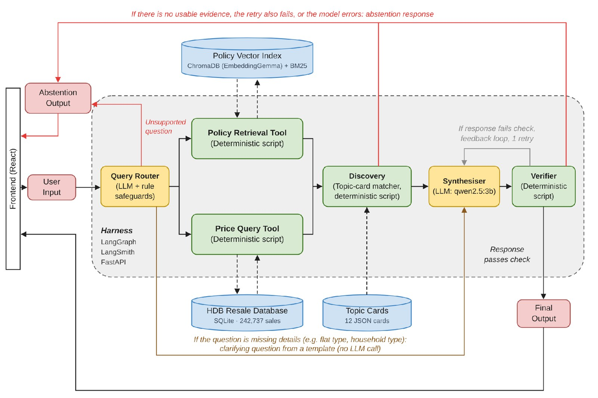

Case study · AI chatbot · AI in Software Engineering (SE201)
An AI chatbot that helps people buying an HDB resale flat get answers they can trust, in plain English.
Resale rules are spread across 94 official pages, and generic chatbots can give outdated or wrong answers.
A chatbot that quotes official HDB and CPF pages and calculates prices from 242,737 real sales.
18 of 21 price figures correct, versus 0 for the same AI without our tools.
4 people · Aug – Nov 2026
LangGraph, FastAPI, React, SQL
Buying a resale flat is one of the biggest decisions people make, but the information is scattered. Buyers have to piece together rules from many HDB and CPF pages, and make sense of raw price data. Asking a generic chatbot is risky: it can sound confident while being out of date or simply wrong.
official pages holding the rules
resale sales since 2017, in a raw spreadsheet
median HDB resale price in 2026 (Jan–Oct): a costly decision to get wrong
Answers with sourcesPolicy answers quote the official page word for word, with a link to it.
Real price benchmarksAsk about a town and flat type and it calculates medians and recent sales.
Knows its limitsIt asks for missing details, and declines forecasts or guesses.
Works out what's being asked, and asks for missing details like flat type.
Searches official HDB and CPF pages, or queries the real sales data.
The AI drafts a reply using only those facts.
Code checks every quote against the source and every number against the data.
Shows the answer with sources, or says it can't verify one.
The key idea: the AI handles the language, and plain code handles anything that must be exact. Nothing the AI writes reaches the user unchecked.
Every answer has a thumbs up or down, with optional reasons like “Wrong numbers” or “Outdated”. Feedback goes to the team for review, not straight into the chatbot. A user liking an answer doesn’t make it right, and comments can’t be trusted blindly. So each confirmed problem becomes a new test and a proper fix.

Yellow is the AI model (qwen2.5:3b), green is plain code, blue is data. Built with LangGraph, FastAPI, React and LangSmith. Click to enlarge.
price figures correct, versus 0/21 for the same AI without our tools
of test questions sent down the right path
risky questions, like forecasts and guarantees, safely declined
On 40 brand-new questions it stayed safe but became over-cautious, declining about half the questions it could have answered. Our rules didn't cover every way people phrase things.
Handle more ways of phrasing questions, separate current rules from old ones so answers stay up to date, and test each new version on fresh questions.